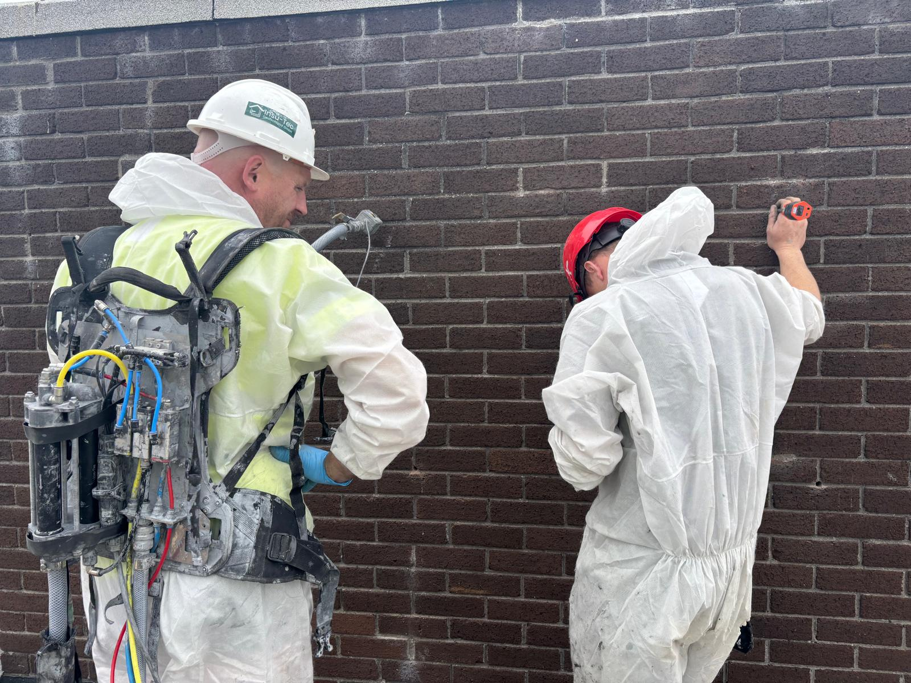

Assess the property
We review the wall type, cavity width, exposure, existing insulation and visible signs of damp or damage.

Professionally installed cavity-wall insulation can help reduce heat loss, improve comfort and support a more energy-efficient building. Ecospec provides bonded bead, WALLTITE and FIRETITE systems for suitable properties and project requirements.
Uninsulated or partially insulated cavity walls can allow valuable heat to escape through the external structure of a property.
Filling a suitable cavity can improve the thermal performance of the wall without changing the external appearance of the building. Installation is generally completed by drilling small holes in a controlled pattern and injecting the selected material into the cavity.
The correct system depends on the cavity width, wall construction, existing insulation, wall-tie condition, moisture exposure and the requirements of the building.

Bonded bead insulation uses specially manufactured insulation beads mixed with a bonding agent and blown into the wall cavity.
The beads flow around corners, wall ties and other details to create a consistent layer within the cavity. Once installed, the bonding agent helps the material remain stable and reduces the risk of movement or settlement.
Bonded bead is commonly used in existing homes and may also be used in suitable new-build applications. The cavity must be inspected to confirm that it is clear, appropriately constructed and suitable for full-fill insulation.
WALLTITE is a high-density polyurethane insulation system injected into suitable cavity walls, where it expands and cures in place.
The expanding material fills irregular areas within the cavity and forms a continuous insulation layer. It may be considered for difficult-to-treat cavities and for projects where thermal performance, airtightness or wall stabilisation are important.
WALLTITE should be installed only by trained and approved installers. The masonry, wall ties, cavity condition and exposure of the building must be assessed before the system is specified.


FIRETITE is an injected mineral-based insulation system developed for suitable new and refurbished masonry cavity walls.
The material is installed into the cavity to form a stable, consistent insulation layer. Its mineral composition makes it particularly relevant where the fire classification of the insulation system is an important part of the project specification.
FIRETITE may be used in residential, commercial and refurbishment projects where the building construction, cavity dimensions and project requirements are suitable. Every installation should follow the applicable certification and technical specification.
The cavity must be suitable for insulation before any material is installed. Our process focuses on preparation, controlled installation and a careful finish.
We review the wall type, cavity width, exposure, existing insulation and visible signs of damp or damage.
The cavity is checked for obstructions, debris, wall-tie condition and other factors that may affect suitability.
Bonded bead, WALLTITE or FIRETITE is specified according to the building and project requirements.
The insulation is installed through a controlled drilling pattern, and the drill holes are carefully made good.
Cavity insulation should not be installed where unresolved water penetration, defective pointing, damaged masonry, unsuitable cavities or other building defects could affect the performance of the system.
Coastal exposure, driving rain, cavity width, wall ties, ventilation openings and existing services must also be considered before work begins.
Eligibility and grant conditions depend on the property and the applicable SEAI scheme. Grant approval should be confirmed before eligible work begins.
Tell us about your property and we will help identify the insulation system that is appropriate for the wall construction and project.